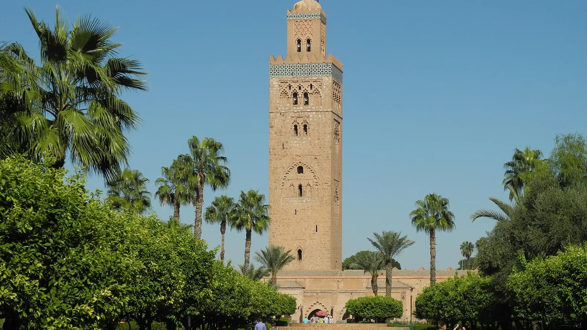
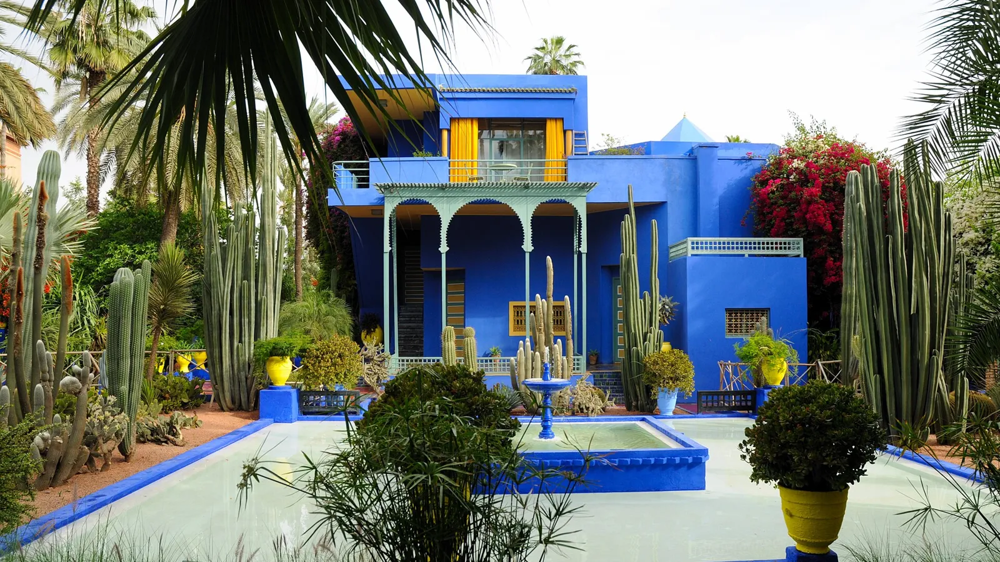
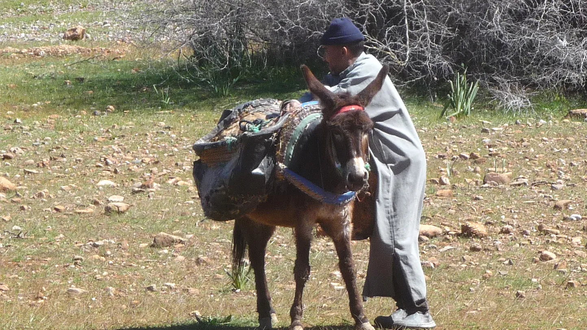
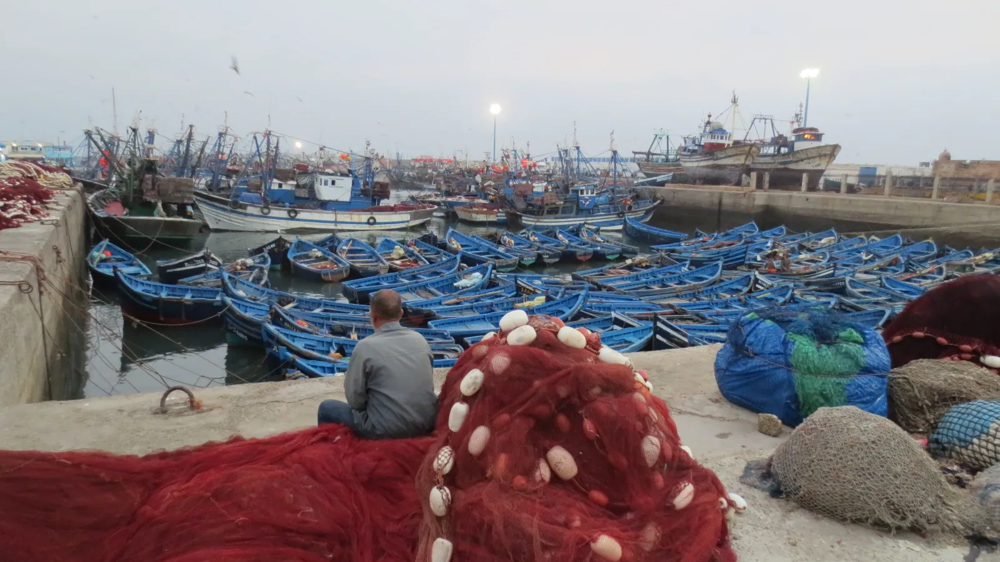
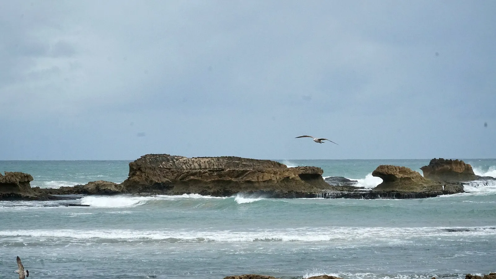
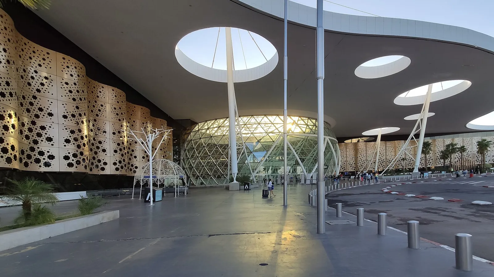
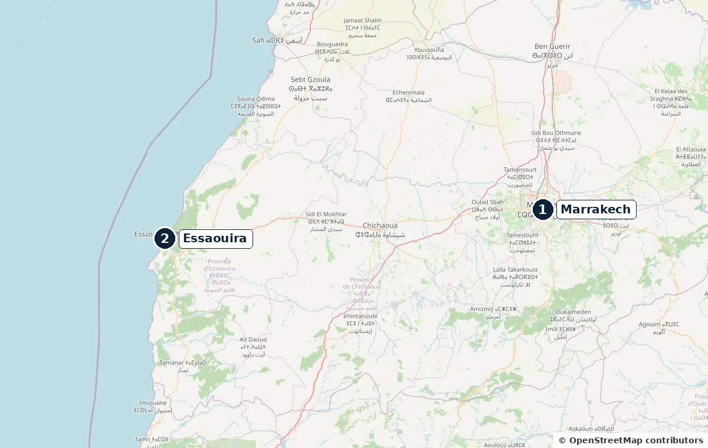

A slow holiday built around Moroccan food. Three nights in a Marrakech riad with a guided street-food walk of over six tasting stops and a hands-on cooking class, then a private transfer to the Atlantic town of Essaouira via an organic farm for lunch under the olive trees, a mint tea and pastry workshop, and a free day by the sea. Moroccan cooking has many classic meat dishes, so we ask every cook in advance to prepare a full vegetarian version: vegetable tagines, seven-vegetable couscous, zaalouk and bissara.
See it for yourself
Photos from the journey







Where you go
The journey on one map

Day by day, in short
Daily travel brief
Distances are by road for the whole day. The full plan with timings comes with your detailed itinerary.
-
1
Arrive in Marrakech
- Jemaa el-Fna: snake charmers and henna sellers expect payment for photos; agree first or decline.
- Riads have plunge pools and roof terraces for the afternoon heat.
-
2
Marrakech street-food walk
- Food walk: eat only at the stalls your guide chooses, and drink bottled water.
- Tell your guide 'vegetarian' at the start; stops are swapped accordingly.
-
3
Moroccan cooking class
- Cook your own tagine: classes start at about 09:30.
- Majorelle Garden: timed tickets; book online.
-
4
Organic farm lunch and on to Essaouira
- Organic farm lunch: roadside 'goats in trees' stops are staged for tips; it is your choice to pay.
- An argan oil women's cooperative can replace the estate visit.
-
5
Mint tea and pastry workshop
- Essaouira is windy all year; bring a light jacket.
-
6
Essaouira at leisure
- The sea is cool; swimming is best in summer.
-
7
Transfer to the airport
- Private transfer: allow 3 hours for the road and 3 hours at the airport for international flights.
- Spices and argan oil go in checked baggage.
Local know-how
Travel hacks from our desk
Hotel deposit
Use a credit card for the deposit or pre-authorisation at check-in, never a forex or debit card. Forex cards cannot hold funds, many hotels refuse them, and a credit-card hold is released faster.
Dirhams
The Moroccan dirham cannot be bought outside Morocco. Change money or use ATMs on arrival, and carry cash for souks, taxis and tips; riads and big shops take cards.
Dress and photos
Cover shoulders and knees, especially in the medinas. Always ask before photographing people; some will ask for a small tip.
Medina guides and touts
Unofficial 'guides' offer to show you the way or the tanneries. Politely refuse and stay with your licensed guide.
Mosques and Ramadan
Non-Muslims may enter only the Hassan II Mosque in Casablanca, on guided tours. During Ramadan many cafés close by day; eat discreetly.
When to go
Best time to visit for this journey
April or October.
March to May and September to November: warm days without the summer heat of Marrakech.
The package
What's included
Included
- 6 nights in riads with breakfast
- 2 lunches (cooking class and farm lunch)
- Private airport and Essaouira transfers
- Marrakech food walk with licensed guide
- Cooking class
- Pastry and tea workshop
- 24/7 support from Blue Diamond Voyage
Not included
- International flights
- Morocco visa
- Other meals
- Drinks
- Tips
- Travel insurance
The detailed itinerary
Some journeys are planned. Ours are crafted.
The full 7-day plan is ready: hour-by-hour timings, drive times, temple dress codes, food for your diet and a route map for every day. Tell us your dates and your city, and we'll send it to you on WhatsApp, shaped around you.
- Hour-by-hour timings
- A route map for every day
- Hotel and room details
- Visa and entry steps
- Vegetarian and Jain dining
24/7 travel desk+91 97148 59797+91 98242 21400
Photo and map credits
- Marrakech Menara Airport: Reda Kerbush, CC BY-SA 4.0, via Wikimedia Commons
- Koutoubia Mosque: Baca12, CC BY-SA 4.0, via Wikimedia Commons
- Jardin Majorelle: Viault, CC BY-SA 4.0, via Wikimedia Commons
- Argan forest: gailhampshire from Cradley, Malvern, U.K, CC BY 2.0, via Wikimedia Commons
- Port of Essaouira: Arnaud 25, CC BY-SA 3.0, via Wikimedia Commons
- Essaouira Beach: Adam Harangozó, CC BY-SA 4.0, via Wikimedia Commons
- Marrakech Menara Airport: Reda Kerbush, CC BY-SA 4.0, via Wikimedia Commons
- Maps: © OpenStreetMap contributors; road routes by OSRM.